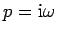
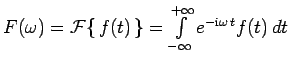
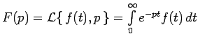
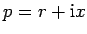
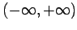
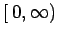

Inhalt Index DeskTop Bronstein

 Integraltransformationen Fourier-Transformation Eigenschaften der Fourier-Transformation
Integraltransformationen Fourier-Transformation Eigenschaften der Fourier-Transformation


Zwischen FOURIER- und LAPLACE-Transformation besteht ein enger Zusammenhang, der dadurch gegeben ist, daß sich die FOURIER-Transformation als Spezialfall der LAPLACE-Transformation für den Fall  ergibt. Daraus folgt, daß jede FOURIER-transformierbare Funktion auch LAPLACE-transformierbar ist, während das Umgekehrte nur für einen kleineren Kreis von Funktionen f(t) möglich ist. Die folgende Tabelle enthält einen Vergleich einer Reihe von Eigenschaften der beiden Integraltransformationen.
| FOURIER-Transformation | LAPLACE-Transformation |
|  |
 p ist komplex,  |
| Ein Verschiebungssatz | Zwei Verschiebungssätze |
| Intervall:  Lösung von Differentialgleichungen, die Probleme mit diesem zweiseitigem Definitionsbereich beschreiben, z.B. die Wellen-Gleichung |
Intervall:  Lösung von Differentialgleichungen, die Probleme mit diesem einseitigen Definitionsbereich beschreiben, z.B. die Wärmeleitungs-Gleichung |
| Differentiationssatz enthält keine Anfangswerte | Differentiationssatz enthält Anfangswerte |
| Konvergenz des FOURIER-Integrals hängt nur von f(t) ab |
Konvergenz des LAPLACE-Integrals wird durch den Faktor e-pt verbessert |
| Genügt der zweiseitigen Faltung | Genügt der einseitigen Faltung |